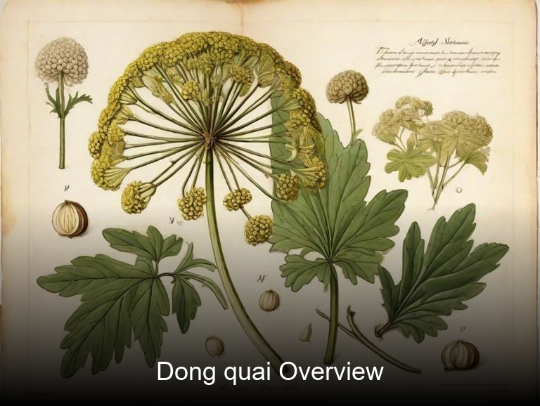
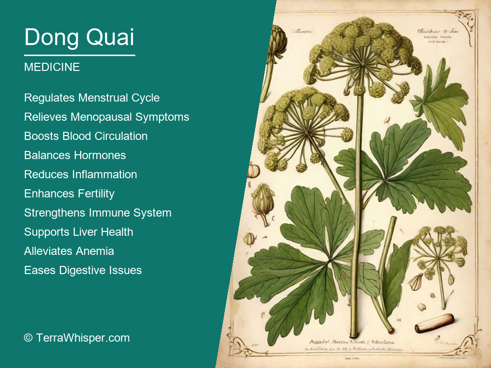
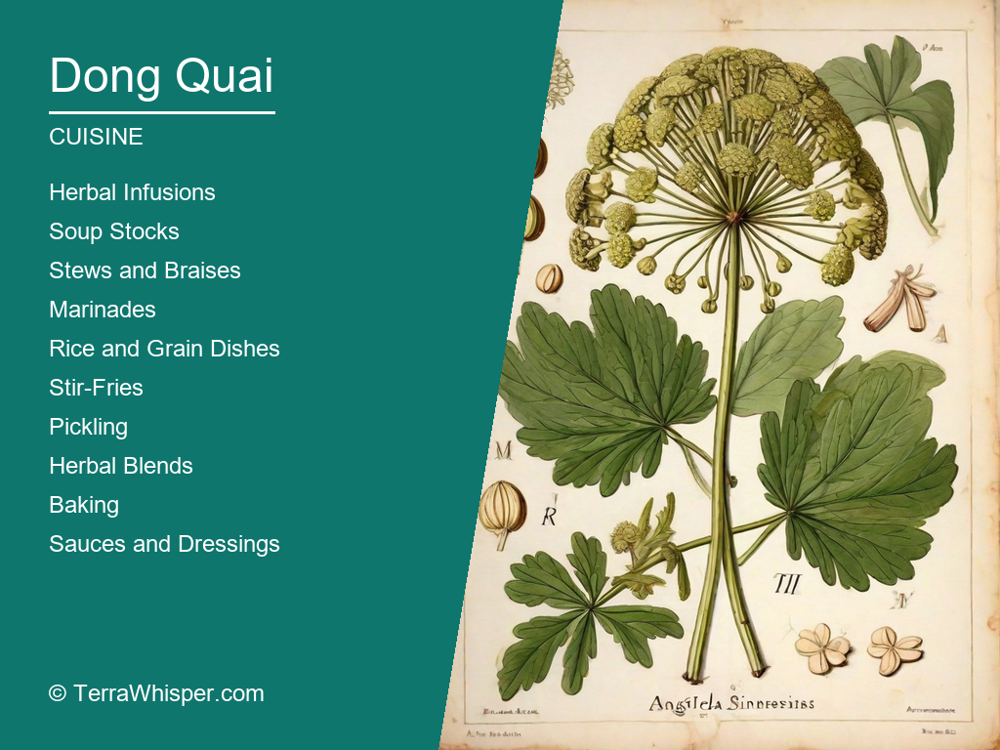
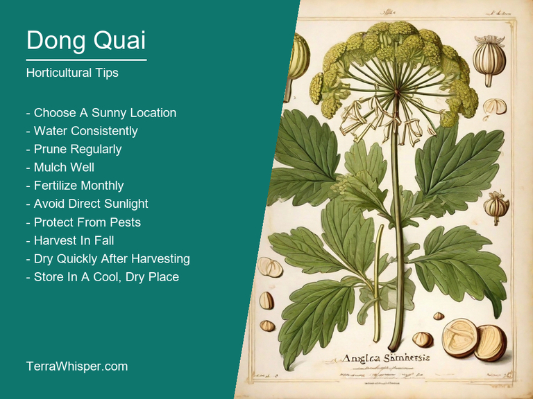
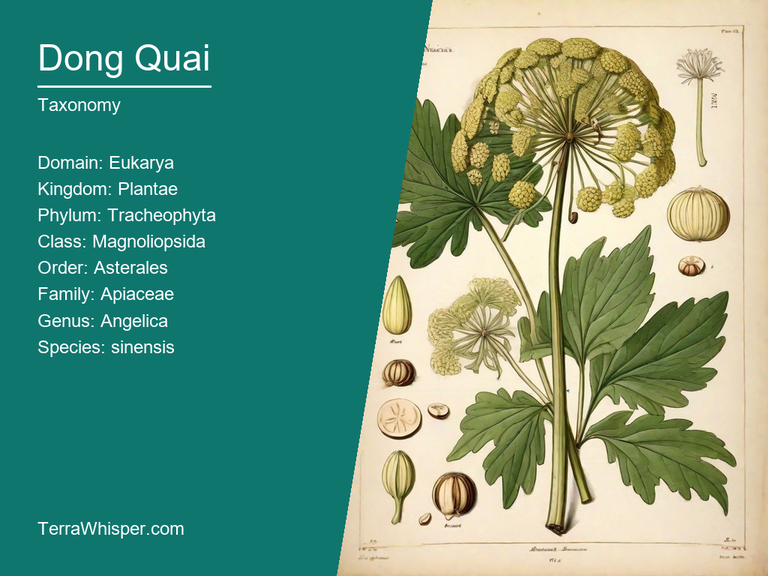
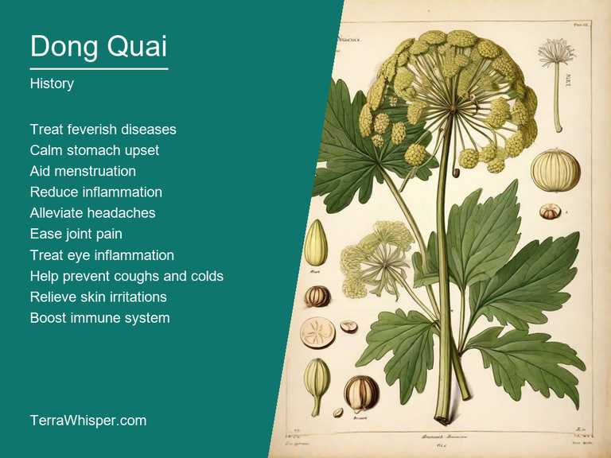

Dong quai, scientifically known as Angelica sinensis, is a widely-used medicinal herb in traditional Chinese medicine (TCM) that has been used for thousands of years. It is also utilized in culinary practices to impart unique flavors and fragrances. Rich in essential oils and vitamins, dong quai is known for its ability to regulate menstrual cycles, alleviate menopausal symptoms, and promote general well-being among women. In addition to its health benefits, dong quai's culinary properties add an exciting depth of flavor to dishes such as soups, stews, and stir-fries.
As a horticultural plant, dong quai boasts attractive foliage and striking flowers that make it a valuable ornamental addition to gardens. Its tall, branching stems are adorned with feathery leaves that provide an interesting textural contrast in any landscape design. The delicate white flowers emerge from the top of each stem, adding visual interest during blooming season. Dong quai is relatively low-maintenance once established but requires well-drained soil and full sun to thrive.
Botanically speaking, dong quai is part of the Apiaceae family, which includes other well-known herbs like carrots and parsley. The plant itself is native to China, Korea, and Japan but has since been cultivated worldwide for its numerous health benefits and ornamental value. Historically, dong quai has played a significant role in Chinese medicine practices, where it was highly prized for its ability to promote blood circulation and support reproductive health. Today, research continues to explore the potential therapeutic uses of this versatile plant beyond its traditional applications.
In this article, you will discover what are the medicinal and culinary uses of dong quai. Then, you'll learn how to cultivate it, what is its botanical profile, and how it was used historically.
Dong quai (Angelica sinensis) has many health benefits, such as being an effective treatment for menstrual problems and PMS symptoms, improving blood circulation, promoting fertility, reducing menopausal discomfort, enhancing the immune system, aiding digestion, relieving arthritis pain, and supporting overall well-being. It contains numerous essential oils, phytonutrients, vitamins, and minerals that contribute to its therapeutic properties.
The following illustration lists the most important uses of dong quai in medicine.

The main constituents of dong quai include ferulic acid, coumarin, essential oils, polysaccharides, monoterpenes, sesquiterpenoids, sterols, flavonoids, and coumestans. These compounds contribute to various beneficial properties, such as anti-inflammatory, antioxidant, and hormone-regulating effects.
The most commonly used parts of dong quai include its root and rhizomes (underground stems). Traditionally, it is processed into medicinal preparations like decoctions, tinctures, powders, teas, pills, oils, and capsules for consumption.
While dong quai has numerous benefits, it may also cause certain side effects in some individuals, such as headaches, gastrointestinal issues, allergic reactions, and skin rashes. In addition, the use of this herb can interact with other medications, leading to potential complications or reduced efficacy.
To avoid any adverse consequences, it is essential to consult a healthcare professional before incorporating dong quai into your health regimen. Pay close attention to potential allergies and interactions with existing medications when taking this herb. Additionally, women who are pregnant, nursing, or have hormone-sensitive conditions should exercise extra caution and seek guidance from their healthcare provider before using dong quai.
Dong quai, also known as Chinese angelica or Angelica sinensis, has a rich culinary history in Asia and is now gaining popularity in the West for its unique flavor and health benefits. It can be used in a variety of dishes such as stir-fries, soups, stews, salads, and teas. Its versatile nature makes it an excellent ingredient for both savory and sweet dishes. Dong quai is often used to add depth and complexity of flavor to Chinese and Japanese cuisine. It pairs well with a variety of ingredients such as ginger, garlic, soy sauce, sesame oil, and honey.
The following illustration lists the most common uses of dong quai for culinary purposes.

Dong quai has a mild and slightly sweet taste with a slight tangy aftertaste. Its flavor is similar to licorice or fennel, but not as strong. It also has a subtle earthy note that adds depth to the dish. When cooked, its flavor intensifies and becomes more pronounced. Dong quai's flavor pairs well with a variety of ingredients and can be used in both savory and sweet dishes.
Dong quai is an herbaceous plant that grows to a height of 6-12 feet. It has slender stems and long, thin leaves that are bright green and have a slightly serrated edge. The most common edible part of dong quai is the root. It can be eaten raw or cooked and is often used in Chinese medicine for its health benefits. Other parts of the plant such as the stem and leaves can also be consumed, but they are not commonly used in culinary dishes.
When cooking with dong quai, it is best to use fresh roots as they have a stronger flavor and are more fragrant than dried roots. To prepare dong quai, simply wash the root thoroughly and peel off the outer skin. It can then be sliced or chopped into small pieces and added to the dish. Dong quai should be used in moderation as it can be overpowering if used too much. It pairs well with a variety of ingredients such as ginger, garlic, soy sauce, sesame oil, and honey.
Like all herbs, dong quai can have side effects and toxicity when consumed in large amounts or used improperly. It is important to consume dong quai in moderation as too much of it can cause nausea, diarrhea, headache, and dizziness. Long-term consumption of dong quai can also lead to liver damage and other health problems. Pregnant and breastfeeding women should avoid consuming dong quai as it can interfere with hormone levels and cause harm to the fetus or child. It is important to consult a healthcare professional before consuming dong quai or using it in any medication or supplement.
Growing dong quai (Angelica sinensis) requires a lot of care and attention to detail. This herb can only be grown from seed, which must be collected after ripening on the plant. Once sown, dong quai needs full sun exposure and well-drained soil. It prefers slightly acidic soil with a pH level between 6.0 and 6.5. After about two weeks of germination, the seedlings should be thinned to give them enough space to grow. As they get larger, provide them with support to prevent them from falling over. The leaves are typically green and glossy, while the stems are thin and flexible. Dong quai is a hardy plant that can tolerate cold temperatures, but it requires moderate watering to keep it hydrated.
The following illustration lists the most important tips to cutlitvate dong quai.

The ideal growing conditions for dong quai (Angelica sinensis) depend on its age and size. Young plants need more attention than mature ones, as they require frequent fertilization and pruning to promote healthy growth. The soil should be moist during spring and summer, but dry in the winter months to prevent mold and rot. Dong quai is a shade-tolerant plant, so it can be grown in areas with partial or full shade. To keep the plant healthy, remove any dead leaves or debris from the base of the stem. Prune back the branches regularly to promote bushy growth and prevent them from becoming too heavy for the stem to support. If dong quai starts to wilt or turn brown, it may be a sign of stress, which could be caused by overwatering or lack of sunlight.
Maintaining dong quai (Angelica sinensis) is relatively easy once it has established itself in its growing environment. The plant does not require frequent watering, but it should be kept moist during dry periods to prevent wilting. Dong quai requires minimal pruning, as the branches will naturally grow outward and upward to reach for sunlight. To prevent pests and diseases from affecting the plant, apply a natural fungicide or insecticide on a regular basis. If the leaves start to yellow or brown, it may be a sign of nutrient deficiency, which can be remedied by adding organic matter to the soil or fertilizing with a balanced fertilizer. Overall, dong quai is a low-maintenance plant that requires little attention beyond basic care and monitoring.
Domain Eukarya, Kingdom Plantae, Phylum Tracheophyta, Class Magnoliopsida, Order Apiales, Family Apiaceae (also called Umbelliferae), Genus Angelica, Species sinensis (Dong Quai). Common Names include Chinese Angelica, Tang-kuei, and Female Ginseng.
The following illustration display the botanical profile of dong quai.

Dong Quai has several variants including 'Fu Zi' (Aconitum carmichaeli), 'Bai Zi' (Cotoneaster melalepoides) and 'Yin Zi' (Alisma plantago-aquatica). These variants differ in their medicinal properties and uses.
Dong Quai is a perennial herbaceous plant with hollow stems, pinnate leaves, small flowers arranged in umbrella-shaped inflorescences, and fruit in the form of a dry schizocarp. The plant grows up to 1.5 meters tall.
Dong Quai is native to China, particularly in the provinces of Hebei, Shandong, Shanxi, Henan, and Inner Mongolia. It can also be found in Korea, Japan, and some parts of Europe and North America where it has been introduced as an ornamental plant.
Dong Quai begins its life cycle from seeds that germinate during spring. The plant forms rosettes of leaves during the first year before producing a flowering stem in the second year. It reproduces both sexually through seed production and vegetatively through rhizome division. Its flowers are pollinated by insects, leading to fruit formation and subsequent seed dispersal.
The origin of dong quai is said to date back as far as ancient China where it was initially used for treating different health conditions by people from all walks of life in their day-to-day lives, giving this unique plant a profound historic foundation both culturally and scientific. As the name implies ("dōng" means eastern while "quai", or quaéi refers to an herbal root), it is believed that dong qiao originated from China's rich heritage in traditional medicine known as Chinese Medicine, which dates back over 50 centuries ago when people began utilizing plants and natural substances for treating illnesses.
The following illustration lists the most well known historical uses of dong quai.

The cultural significance of Dang Quai runs deep within the society; it has long been used by women who give birth to ease labor pains during childbirth making this herbal medicine partake in one's identity, spiritual connection while becoming pregnant and motherhood which ultimately forms an essential component towards defining female femininity. Additionally, dong quai is also considered a symbol of harmony between menstruation cycles because it helps regulate hormones thus playing significant roles when managing irregular periods or other reproductive issues faced by women in different stages across their life journey such as puberty and perimenopause age transitions making the herb culturally relevant for many generations.
Myths, legends & tales associated with Dang Gui have been a source of wonder over centuries since it has long-established connections to folklore traditions within China where people believed that this magical plant could cure any disease or illness if used correctly and according to ancient beliefs. Some stories even claim the herb had supernatural healing abilities, able not only treat physical but also spiritual ailments by warding off evil spirits who might cause sickness in someone's life hence adding further complexity on its perceived significance during this time period
Dong quai has been used across centuries as an integral part of Chinese literature; from early literary works dating back to the Han dynasty like 'Inner Classic' where recipes that mention using dang gui can be found, through many epic stories woven together over thousands years which show its vital usage within different cultural contexts such us medical texts and poetry writing indicating widespread awareness amongst authors of both therapeutic use in literature as well folk customs throughout generations.
The folkloristic uses were often based on the belief that dong quai held supernatural powers, making it a potent medicine capable to treat various illnesses such including everything from respiratory problems and digestion disorders to reproductive issues like regulating hormonal balance in women's bodies during their menstrual cycle which can alleviate pains associated with PMS or dysmenorrhea while simultaneously providing strength against infertility struggles faced by some couples attempting conception.